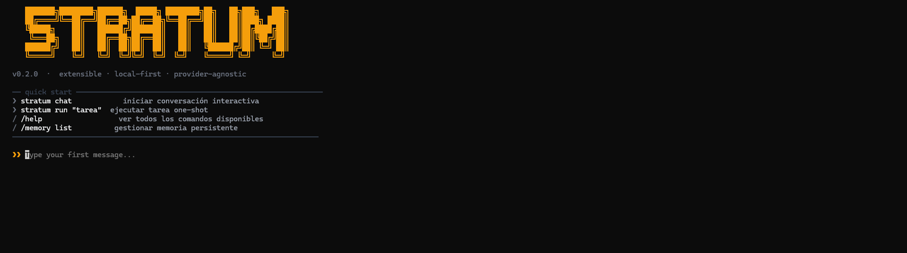
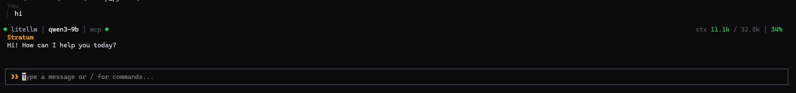
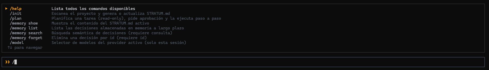

Estado general
Hito actual
Cargando…
Commits totales
-
Commits 30 días
-
Gráficos de evolución
Actividad diaria — 45 días
Commits por tipo
Progreso del roadmap
Evolución mensual
Hitos del proyecto
Ejecuciones futuras
Últimos commits
| Fecha | SHA | Autor | Descripción |
|---|
Estado visual actual del CLI


